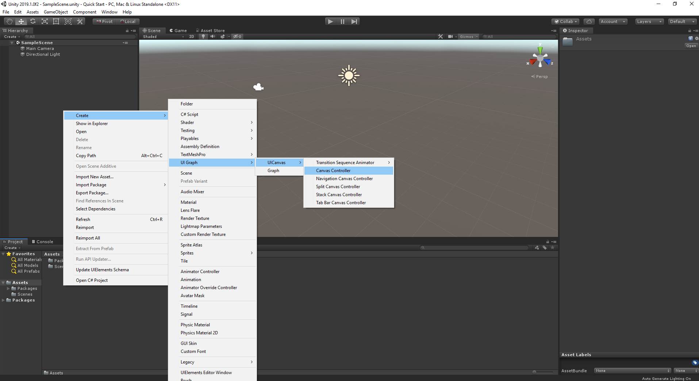
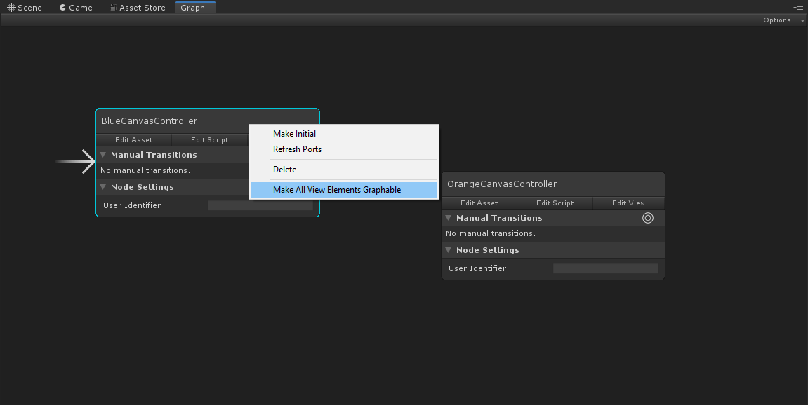

Quick Start
This Quick Start guide will quickly introduce you to the key concepts and workflows of UI Graph.
We will first create a simple user-interface consisting of two screens that can be transitioned between. We will then add a Tab Bar Canvas Controller and a third screen to demonstrate a Container View Controller, as shown in the video below. All of this will be done without writing a line of code.
Installation
Upon successfully importing the UI Graph package to your project, you will see the following message in the console.
Default UI Graph assets have been generated for your project and can be found in the folder 'Assets\UI Graph\Project Settings (User)'.
Note
By default, the standard Tab Bar Canvas Controller and Navigation Canvas Controller container view controllers use Unity's Text Mesh Pro package to render text. If this is not already installed in your project, install it via the Unity Package Manager. If you are using an alternative text rendering system, you are not required to install Text Mesh Pro and can modify the relevant view controllers to use your text system, if necessary.
Create A Simple User-Interface
Introduction
The core building block of UI Graph is the View Controller. A view controller manages a single view of content in your user-interface. This view can be a whole screen or a smaller section of a screen. We will be using a specific type of view controller for working with Unity's UI Canvas, called a Canvas Controller. This is known in UI Graph as the UI Canvas workflow.
Create The Canvas Controllers
To begin, let's create a simple user-interface consisting of two screens - a blue screen and an orange screen. Create two canvas controllers, one for each screen, by selecting Create/UI Graph/UI Canvas/Canvas Controller from the menu.

Once completed you'll have two canvas controllers in your project, as below.
A canvas controller consists of three assets in the Project inspector - the canvas controller asset itself, a script, and a view prefab. Open the blue canvas controller's view prefab to begin editing it. This will open the view in Prefab Mode and allow you to add your screen's UI components. Below we have added a background image, a title label, and a button, which will be used to present the orange canvas controller when pressed.
Do a similar thing for the orange canvas controller, this time adding a button to be used for dismissal.
That completes the creation of our canvas controllers. The next step is to create a Graph to represent the flow of our interface.
Create The Graph
Graphs enable you to build the flow of your user-interface in a visual, node-based editor. We will use a graph to construct the flow of our two screens. To create a graph, select Create/UI Graph/Graph from the Unity menu. This will create a new graph asset at the selected location.
Double-click the newly created graph to open it in the graph editor. To add our view controllers to the graph, first drag the blue canvas controller asset (not the script or the view prefab) onto the graph editor. Do the same for the orange canvas controller and your graph will now contain both canvas controllers.
Note
Notice that the BlueCanvasController node has an arrow on the left pointing towards it. This signifies that it is the graph's initial view controller. If you added the OrangeCanvasController first, simply right-click on the BlueCanvasController node in the graph editor and select Make Initial.
We want to create transitions between our canvas controllers using the buttons that we placed in their views. When the blue screen's "Show Orange" button is pressed, we would like to present the orange screen. And when the orange screen's "Done" button is pressed, we would like to dismiss it. Therefore, we need to expose these buttons to the graph editor. This can be achieved by right-clicking on each view controller node in the editor and selecting Make All View Elements Graphable.

When completed, each view's buttons will be visible in the graph editor, as shown below.
Note
The Make All View Elements Graphable option searches the view for all known graphable types and adds the relevant graphable components to them. You may add these components manually in the view, as well as create your own to expose your own custom types in the graph editor. See Graphs for more information.
We can now connect our canvas controllers. Click and drag from the On Click port of the BlueCanvasController's Show Orange Button to the OrangeCanvasController.
This will present you with a list of all the transitions available between these view controllers, which in this case is a single entry - Present --> Orange Canvas Controller. Select this option to create a presentation transition from this button to the OrangeCanvasController.
Perform a similar process to connect the On Click port of the OrangeCanvasController's Done Button to the BlueCanvasController. This time you will be offered the Dismiss To --> Blue Canvas Controller transition. Select it to create a dismissal transition from this button back to the BlueCanvasController. This will give you a graph as shown below.
The graph is now complete. The final step is to present our graph.
Present The Graph
Canvas controllers are presented within a CanvasWindow component, which is placed within the scene. To present a graph, its initial view controller is instantiated and added to a window.
To present our graph, select the Options menu in the top-right of the graph editor and choose Add Graph To Current Scene.
This will add the required components to the scene for us, including a CanvasWindow. By default, the CanvasGraphPresenter component will present the graph upon Awake.
Hit Play in the Unity editor to see our user-interface in action. Selecting SHOW THE ORANGE SCREEN will present the orange screen. Selecting DONE will dismiss back to the blue screen. The transitions will be animated using the default animators.
Add A Tab Bar Container (Optional)
Introduction
As mentioned earlier, view controllers can also represent a smaller section of a screen. This is because view controllers can embed child view controllers, enabling composite screens consisting of several view controllers' views to be created. A view controller that embeds, or contains, child view controllers is referred to as a Container View Controller. UI Graph offers several standard Container View Controllers designed to provide common user-interface layouts. One such container is the Tab Bar Canvas Controller.
The Tab Bar Canvas Controller is a container view controller designed for switching between content screens with a tab bar interface. It manages a list of content view controllers and offers transitions, in addition to a tab bar interface, for switching between the currently selected/visible view controller.
Create The Canvas Controllers
We will add our blue canvas controller and a new, yellow canvas controller to a tab bar controller. This will embed our blue and yellow screens in a parent tab bar controller and allow us to switch between them using its tab bar interface. Additionally, the Blue --> Orange presentation that we created previously will be maintained.
Begin by creating a third, yellow canvas controller in the same way that we created the blue and orange screens previously.
Next, create a new Tab Bar Canvas Controller by selecting Create/UI Graph/UI Canvas/Tab Bar Canvas Controller from the Unity menu. This will create an asset instance of the Tab Bar Canvas Controller and a view prefab at the selected location. The tab bar controller's view can be edited like any other canvas controller by opening its view prefab. For now, we have simply increased the height of the tab bar slightly for demonstration purposes.
Add To Graph
Add both the tab bar and yellow canvas controllers to the graph by dragging them onto the graph editor. Now, we want to make the tab bar controller our graph's initial view controller and add the blue and yellow canvas controllers to the tab bar's list of view controllers. To do this, right-click on the TabBarCanvasController node and select Make Initial. Then, connect the View Controllers port of the TabBarCanvasController node to the BlueCanvasController and YellowCanvasController nodes. This will add them to the tab bar controller's list of View Controllers. This will give you a graph configured as shown below.
Hit Play in the Unity editor to see our modified user-interface in action. Selecting a tab bar item switches between the blue and yellow canvas controllers. Notice that these canvas controllers are embedded within the parent tab bar controller. Selecting SHOW THE ORANGE SCREEN will still present the orange screen. Notice that this is presented on top of the whole tab bar controller. Selecting DONE will dismiss back to the blue screen as before. The transitions will be animated using the default animators.
That completes the Quick Start guide. You may wish to explore the package's demo projects for further reference and examples.